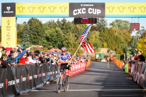
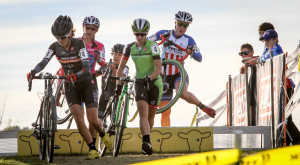
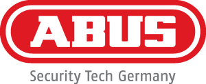

Posted on October 12, 2015 by TREKCXCC
By Michael Riley & Ted Burns
Photo: B.D. Andrews – http://www.bdandrews.com
Stephen Hyde (Cannondale-Cyclocrossworld.com) and Crystal Anthony (Boulder Cycle Sport-Yogaglo) won the Elite Men’s and Women’s UCI C2 race on the second day of racing at the Trek CXC Cup in Waterloo, WI. Hyde spent most of the race recovering from a series of falls to beat Allen Krughoff (Noosa Pro Cyclocross) in a sprint finish, while Anthony took charge early in the first lap of the women’s race and held for the win.
Elite Men
After a second place finish in yesterday’s C1 race, Stephen Hyde spent the entirety of the second day of racing chasing a lead group composed of Krughoff, Kerry Werner (Raleigh-Clement), Dan Timmerman (Stans NoTubes), and Brian Matter (KS Energy Services.)
Hyde ran into trouble early in the race but maintained his composure and kept chipping away at the leaders to stay in contention.
“I think I laid on the ground maybe three times today,” Hyde said. “I slide out once and on another Kerry [Werner] slide out in front of me and we got tangled up. It was funny. Our bikes were very intertwined and we were both tugging on them until I paused and took breath.”
Halfway through the race Krughoff separated from the lead group and spent several laps off the front with a 10 second lead.
On the second to last lap, Hyde went straight passed Dan Timmerman and moved into second place behind Krughoff. Hyde then made contact with Krughoff and the game of cat and mouse began. The last lap featured Hyde and Krughoff trading 2 second leads.
“Hyde made a big effort to come up to me and I knew he was going to get across,” Krughoff said. “He is flying right now. I started dialing it back because I knew he would catch me and we would have a sprint.”
The finish came down to a two-man duel between Krughoff and Hyde. On the final turn down the straightaway, Krughoff opted to take the right side of the lane to limit Hyde’s chances at getting by him. Hyde made a quick move on the inside and was able to pass with inches between the railing and Krughoff’s handlebars.
“[Hyde] came up inside when I was closing it down,” Krughoff said. “It was probably the nice thing to do and not shut the door completely and put him into the fence.”
Hyde sprinted in for the win, with Krughoff in second. Dan Timmerman, Brian Matter and James Driscoll filled out the remainder of the top five.
Elite Women
Crystal Anthony took advantage of the course’s technical features and moved to the front of the race halfway through the first lap. Once at the front Anthony took charge of her own destiny and jumped away from the field.
“I got a gap on the first lap through one of the technical sections,” Anthony said. “I just attacked from there before I really knew what I was doing. Then I think I had like 15 seconds and thought that was worth going for it and just tried to ride my race.”
Katie Compton (Trek Factory Racing) fell out of contention early in the race after making several bike changes in an attempt to dial in her tire pressure. Compton ultimately finished outside the top ten, but after a rough weekend she was already looking ahead towards the Valkenberg World Cup on October 18th.
Behind Anthony the main chase group of the day was driven by Caroline Mani (Raleigh-Clement) who towed around Kaitlin Antonneau (Cannondale-Cyclocrossworld.com) and Amanda Miller (Boulder Cycle Sport-Yogaglo) in the closing laps of the race.
“I didn’t feel so awesome at the beginning of the race so I think I needed time to get back,” Mani said. “I didn’t get a good start but I guess it’s because I didn’t feel great. It was good for her [Anthony] because she just went and I tried to close the gap. I would need one more lap maybe to get up to her, but I’m pretty happy with second.”
Antonneau rounded out the podium in third, followed by Amanda Miller in fourth and Sunny Gilbert (Michelob Ultra-Big Shark Racing) in fifth.
For additional race details check the following resources
Posted in Uncategorized
Posted on October 10, 2015 by TREKCXCC
By Michael Riley & Ted Burns
Photo: Jeffery Corcoran – http://www.corcoransphotos.com/
The first day of racing at the 2015 Trek CXC Cup saw U.S. National Champion Jeremy Powers (Rapha-Focus) and Wisconsin native Kaitlin Antonneau (Cannondale-Cyclocrossworld.com) win close battles on the updated cyclocross track in Waterloo, WI. The UCI C1 event, which is held on the grounds of Trek’s Global Headquarters, added several new features for 2015. The most talked about addition, a steep run up named Bontrager Hill, wreaked havoc on the peloton in the early laps of the race.
Elite Men
Stephen Hyde (Cannondale-Cyclocrossworld.com) grabbed the hole shot, once again demonstrating that he is Powers’ strongest challenger on the domestic circuit cyclocross this season. Powers, Allen Krughoff (Noosa Pro Cyclocross) and James Driscoll (Raleigh/Clement) fell into line behind Hyde, and the group proceeded to trade the lead for several laps.
Powers and Hyde established a gap several laps into the action and raced head to head until the final two laps where a mistake cost Hyde the top finish. Hyde’s fall gave Powers an 8-second gap to finish in first place.
“I was going around one of the corners and there was a little dug out portion and I hit it,” Hyde said. “I flipped over and laid on the ground for a second. It gave him [Powers] the gap and I tried to peddle it back down, but I couldn’t do it.”
Powers appreciated the new course features, but without long power sections he had trouble extending his gaps. “There was a lot of fast turns and a lot of big rest sections,” Powers said. “It made it difficult to shake guys. Every section you had to work and peddle on.”
As Powers rode the final few meters, a fan gave him an American flag to finish in style.
I’ve always wanted to grab a flag at a finish line and what better place to do it than here at Trek Headquarters,” Powers said.
Many riders struggled with the dusty and dry conditions including Driscoll who finished in third. “It was dry and hard packed out there,” Driscoll said. “Everyone is going to have limited traction similar to mud. Here today it was a lot faster and more sudden.”
Dan Timmerman (Stan’s NoTubes) finished in fourth and Wisconsin native Brain Matter (KS Energy Services) finished in fifth.
Elite Women
In the women’s race Amanda Miller (Boulder Cycle Sport-Yogaglo) took the holeshot and led in the early laps of the race. Miller was the lead rider in a power quartet that included Antonneau, Katie Compton (Trek Factory Racing), and Crystal Anthony (Boulder Cycle Sport-Yogaglo.) The four riders established a solid gap after two laps and stayed within striking distance of each other for the remainder of the race.
Compton took several turns at the front but was continuously hit by attacks from Miller. Miller’s attacks put Compton in trouble but the 10 time National Champion stayed in contact with the leaders.
On the final lap Antonneau jumped to the front of the small group and led out into the finish. The race had unfolded perfectly for Antonneau who races for Twenty16-ShoAir and the U.S. National team during the road season.
“I had a good start and just tried to stay in the lead group because that’s something I have trouble with,” Antonneau said. “It came down to a sprint with Crystal and Amanda. I race on the road so I can sprint okay.”
Antonneau sprinted out of the final corner and won several bike lengths ahead of Miller.
It was a Antonneau’s second C1 victory of the year, and especially sweet due to the army of family, friends, and fans that came to cheer her on.
“If feels so good, even better than by C1 win in Rochester,” Antonneau said. “I’m from Wisconsin and all my family, and team and boyfriend are here. I’m really excited to win in front of them because they don’t get to watch me race very often.”
Miller finished in second, followed by Anthony in third and Compton in fourth. It was a disappointing finish for Compton who won both days of the Trek CXC Cup in 2014.
“I just didn’t feel very good,” Compton said. “It’s such bumpy course, if you don’t have the legs you can’t fake it. I just didn’t have it. I made a mistake on the last lap and fishtailed, wiped out a bit and lost the group there and rode in for fourth.”
Caroline Mani (Raleigh-Clement) rounded out the top five in fifth place.
For additional race coverage check the following resources
Posted in Uncategorized
Posted on October 5, 2015 by TREKCXCC
Bontrager will have wheels for you to demo during the Trek CXC Cup Friday pre-ride from 5:30pm until 7pm. Look for them just over from the top of Trek Factory hill (you know the one with the downhill switchbacks that send you straight down to the building and then back up a leg burning climb).
Posted in Uncategorized
Posted on October 1, 2015 by TREKCXCC
Don’t forget to take time to visit the expo at the Trek CXC Cup and see what our sponsors and vendors have for you.
Food and Drink
Expo
Other
Posted in Uncategorized
Posted on September 24, 2015 by TREKCXCC
Borah Teamwear joins the Trek CXC Cup once again as the official custom apparel provider for 2015. New for this year, Borah Teamwear will be offering a custom merino wool jersey raffle on Friday night to four lucky winners – sign up at the Borah booth during registration .
In addition to the raffle, a stylish custom Trek CXC Hoody and Trek CXC Wool Jersey will be available made-to-order from the Borah’s online store here: https://borahteamwear.com/team-store/trek-cxc-cup.
“We’re thrilled to partner with Borah Teamwear, another great Wisconsin company whose products we proudly showcase at the race,” says Renee Callaway, Trek CXC Cup Race Director. “The merino wool is a classy addition to the Trek CXC apparel offering from Borah, and will be presented to several podium categories and raffle winners,” added Callaway.
Borah Teamwear was founded in 1997 by Chris Jackson, an avid cyclist and Nordic skier, Borah Teamwear has quickly become one of the leading custom apparel companies in North America. Starting out with the development of one style of mountain baggy bike shorts, to selling thousands of custom items, Borah Teamwear has always stood by their mission, “never giving the customer an excuse to go anywhere else.” Today, Borah Teamwear employs a team of custom apparel enthusiasts and manufactures one hundred percent of their product line in their Wisconsin, USA factory, just a few hours from Trek Headquarters. By maintaining total control of the manufacturing process, they are able to ensure each and every customer the luxury of a high quality, USA made product, delivered on-time as expected.
Posted in Uncategorized
Posted on September 15, 2015 by TREKCXCC
Cross is coming and ABUS Mobile Security, Inc. is ready to go to the races with a full schedule of events on the calendar.
Kicking off with the Ellison Park Cyclocross Festival presented by Full Moon Vista on September 4th-6th, ABUS is kicking off a full schedule of participation in cross events around the country that includes the UCI World Cup kickoff at CLIF Bar CrossVegas on September 16th; the KMC Providence Cyclocross Festival, October 2nd-4th; the Trek CXC, October 10th-11th; the Chicago Cross Cup Series powered by SRAM; and the CrossCrusade Series based in Portland, OR.
“We’re big believers in the sport of cyclocross and we love how it puts us directly in touch with our customers. Everybody is out there on bikes doing what they love. And we get to teach them about how to protect the bikes – all of the bikes – that they love. What makes cross so unique is its appeal to such a wide swath of participants: we see messengers; urban commuters; bike shop owners and their staffs – like the amazing crew from Full Moon Vista; the hard core racer and the hard core believer in having fun on bikes; roadies and mountain bikers; suburban families and college kids. And ABUS makes a product that’s right for ALL of them. It’s an ideal way to be out supporting the community.”
Trek CXC Cup director Renee Callaway commented, “We are excited as an event to be working with a brand like ABUS who sees the value in engaging the cross community. On a personal level and as somebody who rides as much as possible keeping my bike secure is of the utmost importance. It’s no fun to have your bike stolen – whether it’s your new race bike or your old city cruiser and we are excited to help them spread their message about the importance of locking up!”
Hanscom continued, “We will be on site at as many of the races as possible and we’re working closely the various promoters to make sure there is always something fun happening in our tent in addition to showcasing the latest and greatest locks. We encourage everybody to come say hi.”
Posted in Uncategorized
Posted on September 10, 2015 by TREKCXCC
What could be more social than joining some of the top women cyclocross racers to pre-ride the course and discuss how to ride challenging sections? The Trek CXC Cup is excited to once again offer opportunities for Junior Girls as well as Cat 3/4 Women to have an opportunity to improve their skills and boost their racing confidence. Both clinics will run from 5:30 – 6:30 pm and are free of charge. However, only 20 spots are available for each. Registration is available on the main Trek CXC Cup registration page (the first listings which are for Friday are the pre-ride clinics). You will need to have an annual USA Cycling license or purchase a one-day license to participate.
The Junior Girl’s pre-ride clinic is being organized with the support of the fabulous Chicago Cuttin Crew who also made this clinic possible last year. Once again the junior girls will get a chance to learn from Wisconsin native Kaitie Antonneau of the Cannondale-CyclocrossWorld team who has already won one UCI race this season. She will be joined by another yet to be named pro (TBD depending on flight schedules!). This clinic is open to any girl 9-18 with an interest in cyclocross and who would like to improve her skills and tackle the challenges of the Trek CXC Cup course.
The Women’s pre-ride clinic will feature Luna Chix pro Maghalie Rochette. Maghalie hails from Quebec, Canada and was 6th both days at the Trek CXC Cup in her last visit in 2013. This clinic is for Cat 3/4 women and will help you as you decide how to approach tricky sections that might seem intimidating. If you are feeling nervous about signing up to race then this pre-ride clinic might be just what you need. Learn the tips, tricks and secrets from an experienced pro!.
Posted in Uncategorized
Posted on August 22, 2015 by TREKCXCC
On October 10-11, 2015 the Trek CXC Cup will return to the home of Trek Bikes in Waterloo, Wisconsin, for an exciting weekend of both amateur and elite racing. Top elite cyclocross racers will compete in a UCI C1 race on Saturday and a UCI C2 race on Sunday. With the Elite Women and Men both competing for a prize purse worth over $9,000 each over the weekend you can expect to see some of the most exciting racing in the Midwest. Come out to race and then stay for the Elite races to cheer on local champions battling it out with the best cyclocross racers in the nation.
Amateur racers will have a host of opportunities to compete including several new categories. The main Junior race now features more age brackets as well as separate Junior 18 & Under events (for both females and males) that race the full course. A number of new race opportunities have been added for women including new Master’s categories. The large Cat 2/3 race will now award prizes for Cat 2 and for Cat 3 for both women and men.
Registration opens online at USA Cycling on Monday, August 24 at Noon Central time. Start position will primarily be determined by USA Cycling ranking. However, don’t delay in registering as a number of race times filled last year as each time slot has a field limit of 112 racers.
Posted in Uncategorized
Posted on March 9, 2015 by TREKCXCC
We are pleased to announce that the Trek CXC Cup returns to the grounds of Trek Bicycles on October 10 and 11, 2015. Due to the addition of a Cyclocross World Cup in North America on our traditional September weekend the Trek CXC Cup has moved to a later date but this just gives racers a little more time to get ready for the best racing in the upper Midwest. The Trek CXC Cup weekend continues in a great partnership with Trek Bicycles which allows for racing right in Trek’s backyard. Come to Waterloo, Wisconsin, the home of Trek Bicycles and you will get to race your bike right by the factory where the world’s greatest bikes are developed!
The top elite cyclocross racers will be in Wisconsin to compete in a UCI C1 race on Saturday and a UCI C2 race on Sunday. Elite men and women will compete for an equal prize purse of over $10,000 each over the weekend. You can expect to see the most exciting racing of the Wisconsin season in Waterloo as our local champions compete against the best racers from around the globe for cash, points and bragging rights. Make your plans now to compete in the USAC amateur races and stay around to cheer on the elite men and women.
RACE WEEKEND
Posted in Uncategorized
Posted on September 19, 2014 by TREKCXCC
Chicago, IL (September 15th, 2014) ABUS Mobile Security announced today that they are sponsoring the Trek CXC Cup races in Waterloo, WI this weekend.
“ABUS is really excited about supporting the Trek CXC Cup. Cyclocross so makes sense to us – the breadth and width of cyclists who race ‘cross make it an ideal way for us to reach our bike riding and racing customers. ABUS is known for making the ideal lock for a wide variety of locking needs – from the newest crosser to bike messengers and single speed fans to the van locks for professional team trucks – ABUS makes the right lock ranging from innovative cable locks for bike racks, incredible u-locks for racers who commute to work, myriad locking options for the junior racers who also ride their bikes to school and professional riders who need a lock for quick stops on long training rides – we’ve got them all covered and the format of cyclocross provides us a great chance to get out and meet ALL of them.”
Trek CXC Cup director Renee Callaway commented, “I am very excited to be partnering with Abus. As someone who rides as much as possible for both transportation and fun keeping my bike secure is of the utmost importance. It is no fun to have your bike stolen whether it is your new race bike or your old city cruiser. “
Hanscom continued, “We will be on site at the races and we’re working closely with Renee and her team to make sure there is always something fun happening at the ABUS tent in addition to all the great racing going on around us. Come say ‘hi’ and think donut holes….”
Posted in Uncategorized